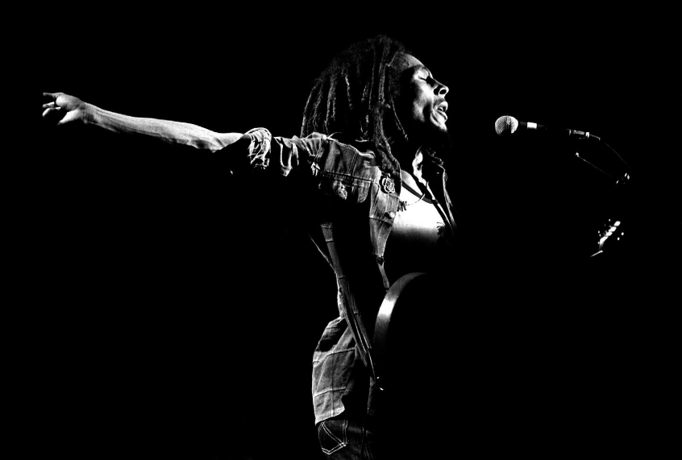

Robert 'Bob' Nesta Marley
Fighter For Freedom Armed With A Guitar

Bob Marley performing during The Survival Tour
in Santa Monica, California on December 2, 1979
- 1945 - Born in St. Anne Parish, Jamaica
- 1962 - Records his first song in Kingston, Jamaica named "Judge Not".
- 1963 - He forms the original Wailers with Peter Tosh, Bunny Livingstone, Junior Braithwaite, Beverley Kelso, and Cherry Smith - later becoming Bob Marley and The Wailers.
- 1966 - Marries soul singer Rita Anderson, a member of The Soulettes and I-Threes, with whom he has five children.
- 1971 - Marley forms his own record label, Tuff Gong
- 1973 - Bob Marley and The Wailers sign to Island Records. They release the album Catch A Fire; first album to make a major impression in markets outside of the Caribbean. Tosh and Livingstone leave the band to embark on solo careers.
- 1975 - He becomes a global superstar after the release of the album Natty Dread, which included the landmark hit "No Woman, No Cry". However, Marley still performed in a free concert organized by the Prime Minister of Jamaica.
- 1976 - An assassination in Jamiaca injured Marley and his wife Rita.
- 1977 - Relocated to England. During this time Marley broke one of his toes while playing futbol in Paris. Doctors find cancerous cells in his toe.
- 1978 - Returned to Jamaica and brought together political opponenets, Prime Minister Michael Manley and JLP leader Edward Seaga, during his performance at the One Love Peace concert.
- 1979 - The album Uprising was released, Marley's final studio album. Hit song by the Wailers, "Redmeption Song" was included on the album. Rumor has it that this song was about Marley coming to terms with his mortality. Marley's health deteriorated.
- 1980 - Last public concert took place in Pittsburgh, PA at The Stanley Theater.
- 1981 - Died at the age of 36 at Cedars of Lebanon Hospital in Miami (now University of Miami Hospital).
- 1994 - Inducted into Rock and Roll Hall of Fame.
A time line look into Bob Marley's life:
"Get up, stand up, Stand up for your rights. Get up, stand up, Don't give up the fight."
-- Bob Marley